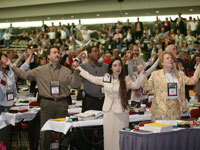

United Methodist Church affirms its unity
May 7, 2004
By Neill Caldwell*
|
A UMNS photo by John C. Goodwin. Delegates Burnham A. Robinson (left) and Rev. Judith A. Sands embrace following a vote of the 2004 General Conference. |
PITTSBURGH (UMNS) — United Methodist delegates to 2004 General Conference stood, joined hands and sang the hymn “Blest Be The Tie That Binds” before approving a resolution affirming the unity of the church.
The May 7 action was in response to the circulation of a document the day before suggesting the formation of a task force to study splitting the church. The statement, crafted by conservatives, was never introduced on the floor of the conference.
In a May 7 newsletter for conference attendees, the Rev. James V. Heidinger II, president of Good News, wrote that “no such resolution will be brought before this General Conference.” But he added that “the matter of amicable separation is now on the table for discussion by United Methodists.” Good News is an unofficial United Methodist evangelical group.
The unity resolution adopted May 7 read: “As United Methodists we remain in covenant with one another, even in the midst of disagreement, and affirm our commitment to work together for our common mission of making disciples throughout the world.” It was introduced by the Rev. John Schol of the Eastern Pennsylvania Annual (regional) Conference and approved by a vote of 869-41, with 8 abstentions.
“It’s important to send a clear message that we are unified, a United Methodist Church which is not splitting,” Schol told reporters after the vote. “I have a great deal of relief that we have affirmed our covenant, and that delegates will not leave this place divided. I believe we will come back in four years as a stronger denomination.”
Schol said he felt moved to do something after receiving phone calls from people back home who had heard the church was about to split. He felt the passage of the unity resolution was a clear signal to block “a movement to drive a wedge in our denomination.”
The idea of expressing affirmation for unity was praised by several delegates before the vote. “This has been monumental for our church,” said the Rev. Stanley Copeland from North Texas. “In the course of our legislative committees and debate on this floor, I’ve found myself in a sea of distrust … and drowning.”
|
A UMNS photo by Mike DuBose. Rev. William Hinson (right), president of the Confessing Movement, and Rev. Bruce Robbins present a resolution on church unity. |
The Rev. Bill McAlilly of Mississippi asked that the moderate voices of the church — a group he called the “Methodist Middle” — be represented in future discussions about unity. “The faithful United Methodists who are not represented or identified with any coalition group, those of us who are neither on the right or on the left, must be included at the table. More often than not, we are silent, and perhaps that’s our sin. But we fear that if we speak, we will be labeled as ‘the opposition.’ If those of us in the middle can contain those on either side, maybe we can find the unity we seek.”
Before the motion was made, the Rev. Bruce Robbins, former top staff executive for the United Methodist Commission on Christian Unity and Interreligious Concerns, and the Rev. Bill Hinson, president of the Confessing Movement, spoke to the delegates and tried to clarify the events of the day before.
“In our conversations on Monday night and Tuesday, some informal proposals were made,” Robbins told the conference. “They were brainstorming sessions. There was no consensus. There were papers distributed with the idea of not going beyond the room. Then on Thursday morning, Dr. Hinson addressed the Good News breakfast and shared the pain he has been experiencing. He mentioned the idea of amicable separation and the suggestion of a resolution being offered.”
Hinson later told reporters that “I stand in amazement at the combustibility of a speech made at an early morning breakfast by someone who is not even a delegate. But those are my honest feelings, and I can’t deny them for the cause of unity. Someone once said that if you sacrifice truth on the altar of unity you lose both.”
Hinson also denied charges that he personally is behind efforts to divide the denomination. “I don’t see myself as schismatic,” Hinson said. “My ancestors heard (John) Wesley preach in Savannah. I am a seventh-generation United Methodist. I do have a deep sense of sadness over our church and its brokenness. Does that mean there are no bridges? Absolutely not.”
Heidinger offered his own explanation of how the proposal to split the church had come to light. “Someone who received the document made copies of it and gave it to the press. … It was assumed that the document was Bill’s (Hinson). It was not.”
Robbins told reporters that “a number of proposals were put forward. The proposals to split came from persons representing the more conservative side. My perception was that it was a document that was of great interest to many people, and one that was shared with various constituencies and copied many times. I can’t say whether one side or another released it.”
Hinson said he had not authored the proposed resolution that ignited the controversy. “I’ve never written a resolution, and if I did it would look a lot better than the one that was circulated on the floor yesterday. It was discussed, and my (Confessing Movement) leadership decided that (such a resolution) would be a very bad idea.”
Robbins said the result of the morning’s vote was that the 10 million member denomination has not considered any split. “The United Methodist Church strives and is determined to seek unity,” he said. “That is the goal for all of us. The question is how do we discern ways to build bridges over our differences? I do believe that God has a greater imagination than we do.”
Conservative leaders say most members are unhappy about the church’s direction, especially with regard to issues like homosexuality.
|  |
A UMNS photo by Mike DuBose. Delegates hold hands prior to a vote affirming unity in the church.
|
“Local churches are increasingly expressing their pain,” Hinson said. “The grass-roots people are very frustrated, and it comes from a feeling of helplessness when they see the covenant we’ve put into law deliberately defied or ignored.”
Robbins agreed that there were deep differences in the church. “But why wait until the split happens to address those concerns? There is a desperate need for some space in the United Methodist Church. It is extremely difficult for some people to participate in a church where they may see things they find offensive to the Gospel of Jesus Christ.”
Hinson articulated his vision of an amicable split to be “like when Paul and Barnabas decided to go their separate ways and the kingdom was enlarged.”
“Our friends on the other side say they will never leave the church, and we will never leave,” Hinson added.” That’s the standoff. If one group said, ‘I’m out of here,’ then we wouldn’t have all this talk.”
The Rev. Kathryn Johnson, executive director of the Methodist Federation for Social Action, said she found any suggestion of a split “absolutely devastating. … Theologically and politically, we differ greatly, but we all share a love for the church.”
“Any talk of divorce is premature because we have not gone through counseling,” Johnson said. “We haven’t talked. We haven’t had honest dialogue yet.”
But Johnson said the idea of division is not new. “Four years ago, these same groups sent a video to every delegate, which concluded with an invitation to leave the church. And these groups on the right have had these proposals up on their Web sites.”
Bishop Felton E. May of the Washington Area said the show of unity on the floor of General Conference reflected “what is truly in the hearts of United Methodist worldwide. I sense that the church is stronger now than we could have ever dreamed or imagined.”
*Caldwell is a correspondent for United Methodist News Service.
News media contact: (412) 325-6080 during General Conference, April 27-May 7. After May 10: (615) 742-5470.